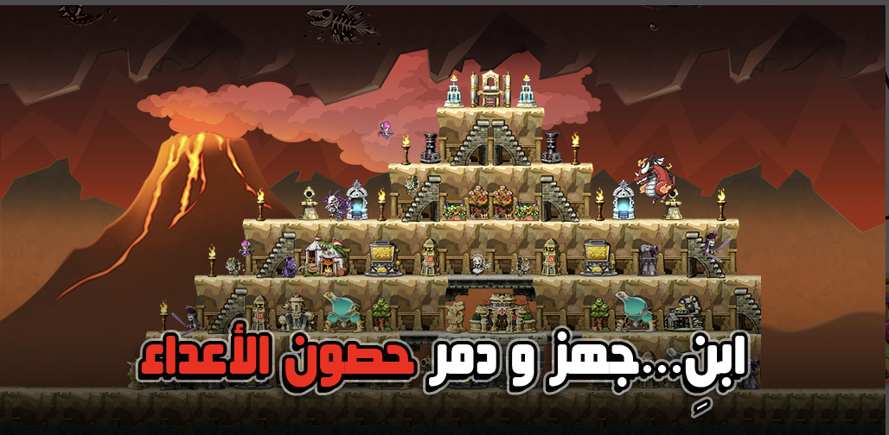
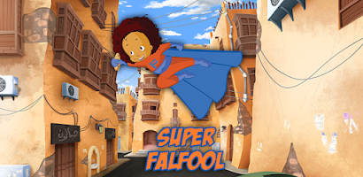
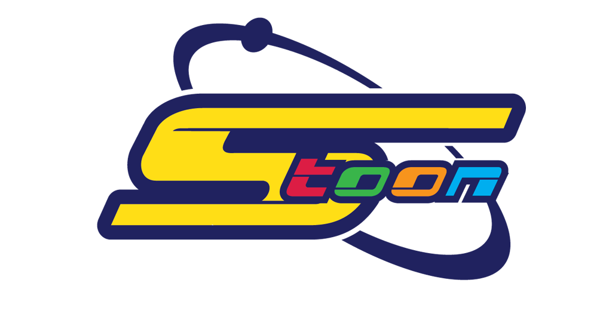
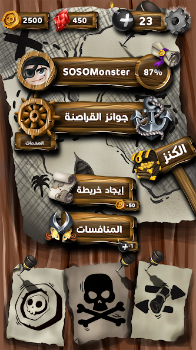
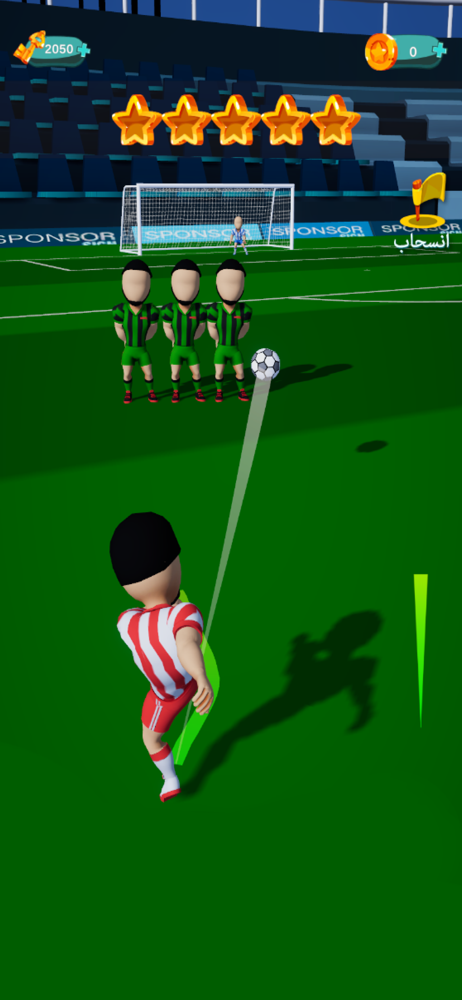
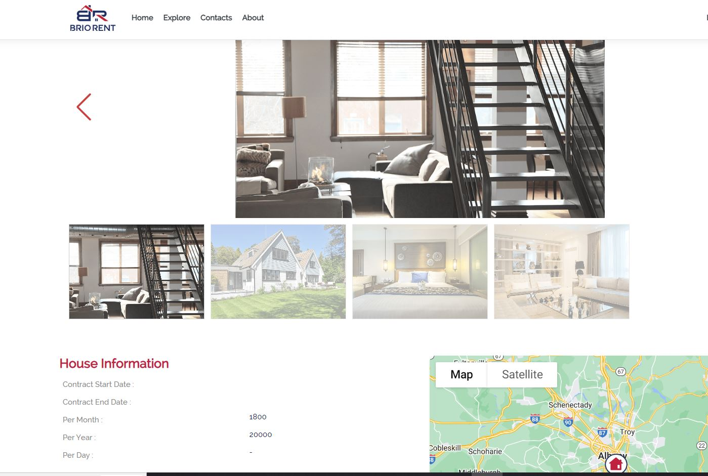

Farah Channir
Senior Software Engineer
AI Integration · Test Automation
About Me
Engineer with 15+ years of hands-on software development experience, now channeling that discipline into AI Engineering. My deep expertise in backend architecture, API design, and system analysis forms the exact foundation modern AI systems require.
I don't just learn technology — I deconstruct it, understand it, and rebuild it. I'm currently architecting an AI Codebase Intelligence Engine using RAG, vector databases, and LLM APIs, and I'm looking for an environment where I can apply my engineering discipline to AI challenges, ramp up quickly, and contribute meaningfully from day one.
Active AI Transition & Hands-On Learning
- LLM API Integration: Claude (Anthropic), OpenAI GPT
- RAG Architecture: semantic chunking, vector databases, embeddings
- Prompt Engineering & system prompt design
- AI Fundamentals: tokenization, context windows, AST-based parsing
- Quantum Computing: completed Q# course; deep interest in quantum processor architecture
AI Codebase Intelligence Engine
ASP.NET Core · Claude API · RAG · Vector Databases
A SaaS product that turns large codebases into a searchable, queryable knowledge base. It ingests source code with AST-based parsing, applies semantic chunking for indexing, and stores embeddings in a vector database — enabling LLM-powered code Q&A, automated bug detection, and documentation generation.
This project is where my two decades of system analysis meet modern AI: understanding how code is structured at the syntax-tree level is the same skill I honed reverse-engineering legacy game servers — now applied to making AI truly understand a codebase.
- Code ingestion pipeline with AST-based parsing
- Semantic chunking strategy for large-scale codebase indexing
- Vector search integration for retrieval-augmented generation
- LLM-powered code Q&A, bug detection, and automated documentation
Ametras
Test Automation Engineer
In my current role I design and implement automated test frameworks that keep quality continuous across multiple projects.
- Design and implement automated test frameworks using Python and Robot Framework for web and API testing across multiple projects.
- Build end-to-end test suites covering functional, regression, and integration testing; integrate into CI/CD pipelines for continuous quality validation.
- Develop reusable keyword libraries to accelerate test development and collaborate with developers to identify, reproduce, and document bugs — significantly reducing regression issues.
- Generate detailed HTML test reports with pass/fail breakdowns, screenshots, and execution logs for stakeholders.
Pabeda
ASP.NET Developer for website and mobile (API) systems.
ISS Facility Services
ISS Facility Services offers a specialized mobile application that features a comprehensive control panel for monitoring all hospital services. This app provides hospital staff with the ability to receive ratings and complaints from patients, thereby enabling them to enhance service delivery and optimize patient satisfaction.
Vanishingincmagic
ASP.NET Developer
- Engineered ASP.NET web applications with upgraded system features to enhance user experience and platform performance.
- Contributed to frontend development using JavaScript and HTML, improving UI quality and client experience.
Gamepower 7 Studio
Backend Game Developer, System Analyst, Website Developer. Here are some samples of my work:
Damar Online
Damar Online is a free MMO Strategy game, developed and localized by Game Power 7 Company.

App StoreCardia: Return of Heroes
Cardia: Return of Heroes is a fast-paced strategic card game. Enjoy challenging gameplay and innovation using simple mechanics that allow for intense duels!
Game features:
- Fast fights
- Compete against other players and defeat them
- A variety of cards
- With daily quest rewards, arena rewards, and more, players can collect hundreds of cards with a variety of rare factions.
- The game mechanism is easy to understand and learn
- Use tactics and intelligence to deftly defeat each opponent with mechanics you can understand within minutes!
- Unique equipment and items
- Cardia: Return of Heroes is the first strategic card game with equipment and various skills for each monster. Equip your equipment wisely to gain the advantage in every duel.
- Commercial market system
- Players can buy and sell cards with a certain amount of gold between each other.
Super Falfool
Super Falfool is a fun and engaging game. I worked as a system analyst and backend ASP.NET Core developer, and provided support after its release.
Game features:
Falafel loves falafel and travels great distances to collect the largest number of them With the Super Falful game of speed and concentration, discover the features of each Falful character and develop their various skills to help him overcome obstacles and collect more falafel.

Google Play StoreSpaceToon

Software Developer and System Analyst. Here are some samples of my work:
SpaceToon Website
Spacetoon Kids TV, established in 2000, is one of the largest and most successful kids entertainment conglomerate in the Middle East region. It consists of a group of companies geographically diverse, specialized in children’s edutainment. Since inception, the Group has grown from strength to strength as its offering is sensitive to a region’s cultural values and the content tailored accordingly; and today, SpaceToon is one of the most recognized children’s media brands in the Middle East and North Africa. Head Quartered in Dubai with offices in Riyadh and Cairo.
WebSite LinkedInSmart Speaker
An integrated educational platform has been developed to facilitate the instruction of the art of rhetoric, utilizing various mechanisms and techniques such as sound recording, proper clip reading, and targeted repetition to correct errors until mastery is achieved. The platform also enables efficient management of students and scheduling of attendance, streamlining the administrative processes for instructors.
Freelance Projects

Throughout the past fifteen years, I have amassed a wealth of experience across a diverse spectrum of projects and roles. This includes proficiency in back-end development, systems analysis, and backend game support, as well as extensive experience in test automation utilizing the Robot Framework and Python. I also possess expertise in re-engineering and updating of existing systems, with a strong focus on utilizing C# and VB as primary programming languages, and the Microsoft platforms and tools since 2005.
Pirates Puzzle
Play multiple games, and solve puzzles, to get pirates' treasure map pieces.
Play Solo (PVE) and Multiplayer (PVP) and compete with other players to be the first one who collects all treasure map pieces to win it.
GM Tools web application to control everything in game
Using Asp.net Core
Using real time database SignalR

One of the games that LikeCard App included
Google Play StoreGoal Cup
With multiple levels of challenges in football,
you have to score a goal from a free kick from multiple angles..
GM Tools web application to control everything in game
Using Asp.net Core
Using real time database SignalR

Google Play StoreApp Store
BrioRent
A fully integrated system is made possible through the combination of a mobile application and a control panel, allowing for the automated management of all real estate rental operations. From the initial inspection and contract process to payment and extension, the application streamlines the entire rental process. Features include the ability to submit maintenance requests with accompanying pictures and videos, which are directed to the maintenance staff closest to the registered tenant. Additionally, the application includes a dedicated section for tenants to track and evaluate the maintenance process, while the system as a whole offers detailed reports and statistics on its services and information.

WebSiteTakfaPoint
TakfaPoint introduces an online system for predicting the goals and winners of the upcoming World Cup 2022.
The platform includes a sophisticated rating system for matches and players,
with free points awarded for accurate predictions.
Real-time updates of all matches will be available to all registered users, along with comprehensive
information on the winners and prize distribution. Our system is designed to provide a seamless and enjoyable
experience for all participants.
WebSite
Other Projects

Over the course of my career, I have undertaken various projects that have contributed to my professional growth. However, due to privacy concerns or the natural progression of business activities, certain projects may no longer be accessible or visible. Additionally, with regard to my ongoing projects, I am unable to disclose details as they are confidential in nature. Nonetheless, I remain committed to delivering high-quality outcomes to my clients and partners, while upholding the standards of professionalism and integrity in all my endeavors.
Skills
A toolkit built over 15+ years — from backend architecture to AI systems.
AI & Emerging
LLM APIsRAGVector DBsEmbeddingsPrompt EngineeringClaude APIOpenAI GPTQ#Quantum ComputingBackend
C#.NET Core 5–8ASP.NET MVCPythonC++JavaSQLREST APIsJSON / XMLFrontend
JavaScriptHTML / CSSRazor PagesAjaxData & Testing
SQL ServerRobot FrameworkSeleniumpytestCI/CDGitOther
UnityDockerAndroid (Basic)System AnalysisReverse EngineeringGet in touch
Open to relocation and remote opportunities.